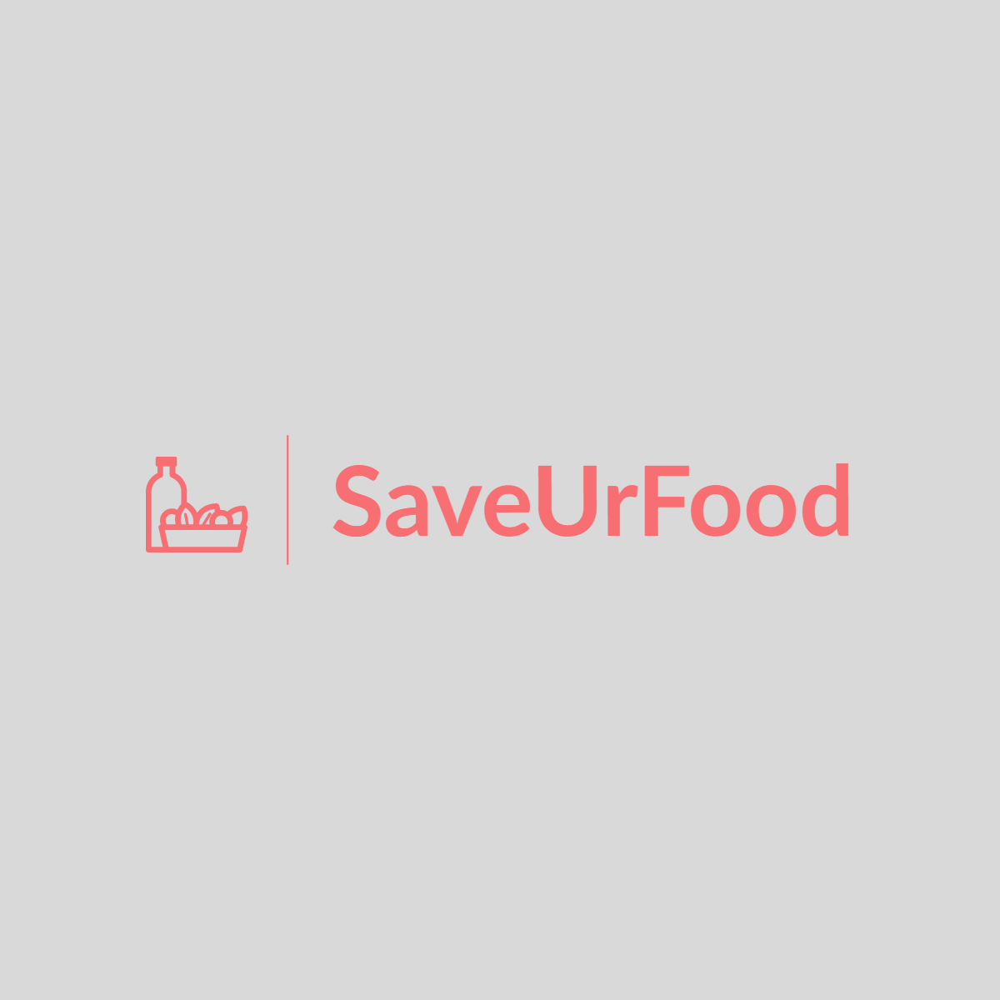
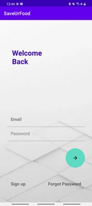
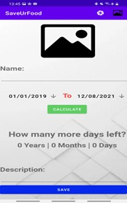
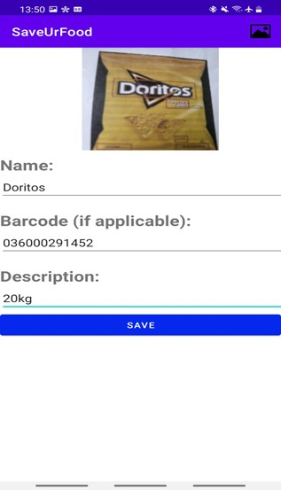
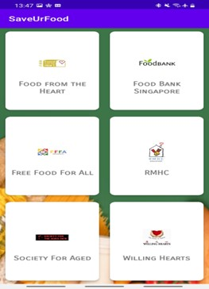

Project summary: Food wastage is a big issue in many countries. In 2011, around one third of the world's food was lost or wasted every year. When food is wasted, it puts pressure on resources as more food has to be sourced to meet the country's demand, and more waste disposal facilities are required to handle it. All of this increases our carbon footprint and contributes to global warming. The root of the problem is people not finishing their food, whether due to excess food or other reasons. The best way to prevent food wastage is to stop it from starting in the first place: encourage people to buy only what they need and give whatever they don't need to people who do.
Generally, I feel that this app is compelling because the concept is simple to understand but still packs plenty of cool features. A lot of food-tracking apps never become popular because of how tiring it is to input data. With features like AI image-to-text for names and barcode-based add and remove, which haven't been tried in other food-tracking apps, I believe my app stands out by reducing the effort required to track food, for my target segment of 25 to 54 year olds who are decent with technology.
Unique features:
- Community section to find out info on local food banks
- AI image-to-text recognition for easier data input
- Barcode scanner to add and remove items easily while shopping
- Expiry date calculator
Since this was my first time using Android Studio, I had to spend some time learning through YouTube videos. I first implemented things like a splash screen and a login page using Firebase.

Afterwards, I used an SQLite database to store the food that the user inputted. Along the way, I implemented an expiry date calculator and AI recognition using Google Lens that can recognise text from an image and input it automatically.

I also added a barcode sensor to scan barcodes with your phone. The barcode acts as an ID which can be used later to remove all foods with the same barcode.

I added a Community section for the user to visit various food banks' websites as well.

Overall, this project was really fun as I got to dip my hands into app development, which I had never done before. I hope to get even better at it someday!